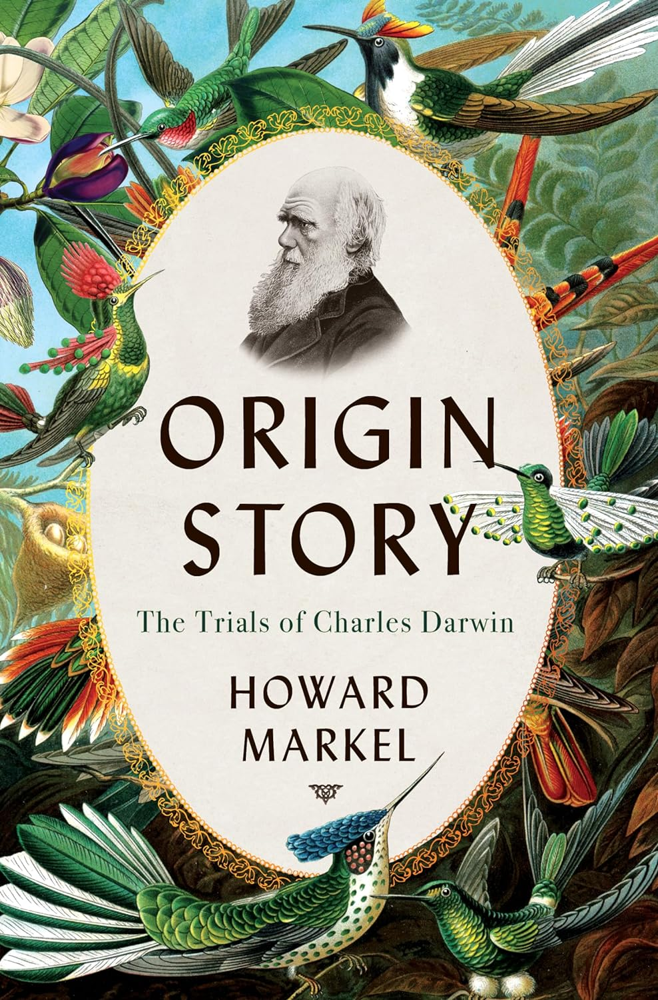
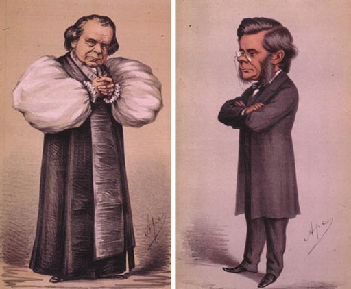
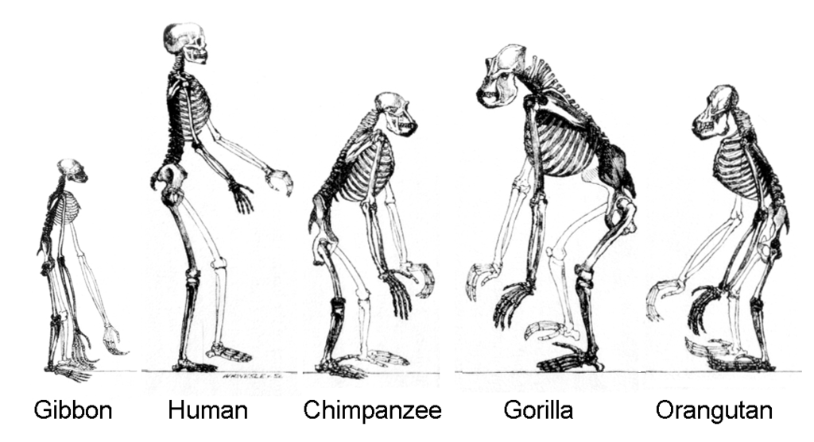

TL;DR: Modern science has taken authority for what is “truth” from the Church. In assuming this authority, scientific institutions have lost their ability to think broadly. We rely on increasingly narrow disciplines of nameless scientific peers for self-correction at our peril!
While writing the last series on the decidedly non-scientific processes of carbon accounting in agriculture, I read an excellent science history book, Origin Story: The Trials of Charles Darwin, by Howard Markel. Dr. Markel is the Director of the Center for the History of Medicine at the University of Michigan and has written several science-based biographies. The coincidence of these activities sharpened my sense that Science is, unfortunately, devolving into a pseudo-religious activity.

Markel’s book provides a lively account of the public reception for Charles Darwin’s groundbreaking work On the Origin of Species by Means of Natural Selection, first published in 1859. It details the various personalities who debated the text and Darwin’s health issues (predominantly chronic flatulence!) surrounding this controversial work. If you like biographies as much as I do, I recommend it. For this series, I thought it was particularly fascinating for the social context and public discourse surrounding the publication of a scientific treatise.
Five years before its publication, consider this: If you wanted to get a Bachelor’s degree at either Oxford or Cambridge, you would have been required to pass a “theological test” and swear an oath of allegiance to the Church of England. If you were Jewish or Catholic, don’t bother applying. My particular specialty in science, chemistry, had not yet risen to the level of a dedicated department at a university. As a rule, universities, including my alma mater, Harvard, were dedicated to subjects outside what is now called STEM. Religion was treated as, well, religion —theology was the main -ology being transferred to the students.
What was remarkable about the environment surrounding Origin of Species was that the book was genuinely and deeply heretical, throwing the religious doctrine of Biblical creationism squarely under the bus. Most of Markel’s book relates to an Oxford-sponsored conference (a partisan debate, actually) about Darwin’s work that prominently featured two characters, Anglican Bishop Samuel Wilberforce (nicknamed “Soapy Sam”). Wilberforce and comparative anatomist Thomas Huxley (grandfather of Brave New World’s Aldous Huxley) participated as a stand-in for Darwin. Their exchange has become known as The Great Debate.

History tells us that Huxley prevailed in that debate, and it is often cited as a turning point in the history of Science. Science and Religion faced off, and Science won 1 . Subsequently, Origin became a worldwide bestseller and is still in print today. The popular press (like the Vanity Fair caricatures above) carried the debate between Creation and Natural Selection to non-scientists, propelling our society toward modern enlightenment. Huxley’s concise argument is summarized in the following drawing:

Here’s why understanding this history is essential. In 1860, the doctrines of the Church were broadly accepted as statements of fact, passed down from generation to generation through higher education. With the rise of modern Science, the Church has lost its authority. Scientific studies have largely supplanted Bible studies as a source of absolute truth. Today’s ‘Bishops’ are distinguished Professors of Science occupying endowed chairs at prestigious universities. Like 19th-century clerics, they tell us what to think, and we believe them! Much like scholars of that era aspired to rise within the ranks of the Church, today’s scholars aspire to rise within the ranks of academic institutions. This status inversion has, in turn, led to a complacency of the elite that threatens to impede progress.
If there’s one thing I’ve learned while writing this “newsletter,” it’s the immeasurable value in thinking through scientific problems from first principles, as if to play the role of Richard Feynman in teaching theoretical physics to CalTech first-year students. As he said:
“You know, I couldn't do it. I couldn't reduce it [Fermi-Dirac statistics] to the freshman level. That means we really don't understand it.” [Richard P. Feynman, as quoted in David L. Goodstein, “Richard P. Feynman, Teacher”, from Physics Today 42(2), 70-75 (1989)]
The implication is that scientific understanding means we can explain a line of reasoning to new minds, not simply our “peers”.
Open debates among intelligent people about minute details, like those at Oxford in 1860, are essential for Science to function correctly, but that’s not happening today at the vital intersection of biology and climate. A forty-year-old controversy persists despite incontrovertible data to the contrary. Most climate scientists seem to accept the assertion that land use change significantly affects emissions because it’s been published in peer-reviewed journals. Failing to trace this assertion back to its origin is malpractice and affects the credibility of the entire scientific enterprise. Relying on models that fail simple accounting tests is the scientific equivalent of a delusion, with predictable and unfortunate consequences.
If you’re scientifically inclined, I encourage you to read and think outside your expertise. Read critically, check your conclusions from different viewpoints, and question experts. And, please, don’t accept something as “truth” simply because it’s passed peer review for a major journal. Peer review is a dangerous echo chamber created by fallible humans. Relying on experts outside your field means you aren’t thinking; if you’re not thinking, you’re not learning.
Scientific progress is in peril at a time when we can least afford it.
Of course, it’s more subtle than that. Science concerns demonstrable facts, while Religion concerns beliefs that require no proof. The two concepts can and should co-exist without contradiction.